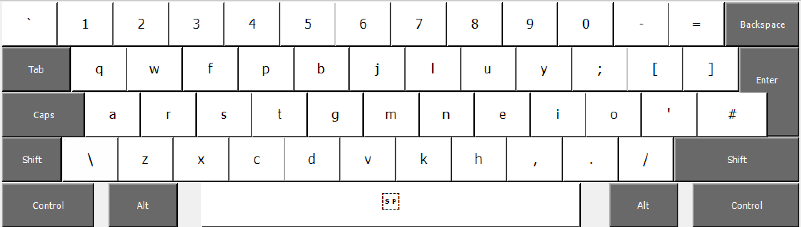

Because of the way how keys on my Razer Blade are staggered, I wasn't able to use recommended Colemak-DH ISO Standard. My keyboard:
My version of Colemak-DH:

Colemak-DK UK ISO (modified)- Windows Installer